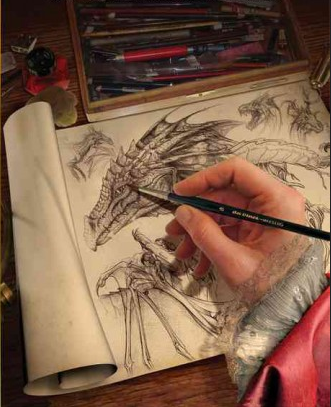

We are the fire born, we protect the dragons. Founded by the baroness Eva Brim, we of the DPAS, strive to protect endanger species of dragons giving them the evironments they need to thrive, and survive. Our magics keep them in isolate packets of reality to give them space to roam without danger to humans. We also fight to protect them from would-be dragon slayers. For centries dragons have been hunted for lack of understanding and out of fear, but we of the DPAS have a treasure trove of knowledge that gives us a solid of understanding of dragons to has taught us how to protect people from dragons